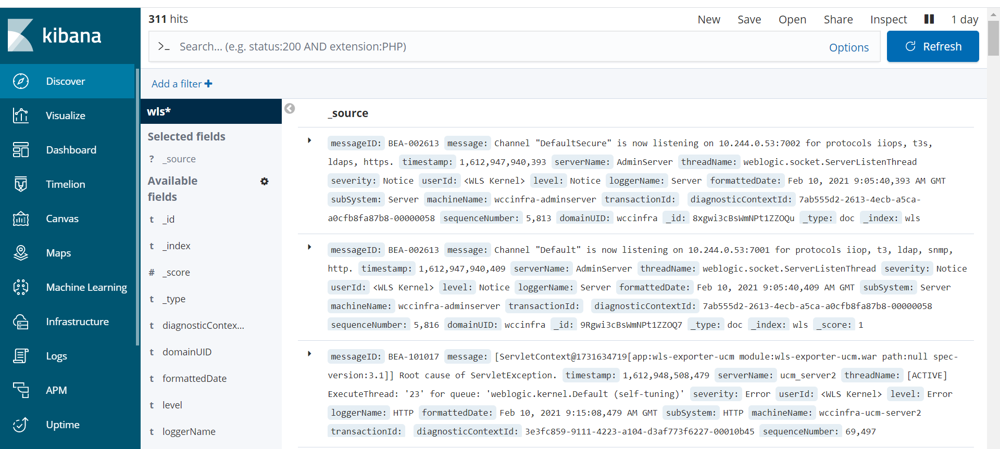

For reference information, see Elasticsearch integration for the WebLogic Kubernetes Operator.
To enable elasticsearch integration, you must edit file kubernetes/charts/weblogic-operator/values.yaml before deploying the WebLogic Kubernetes Operator.
# elkIntegrationEnabled specifies whether or not ELK integration is enabled.
elkIntegrationEnabled: true
# logStashImage specifies the docker image containing logstash.
# This parameter is ignored if 'elkIntegrationEnabled' is false.
logStashImage: "logstash:6.6.0"
# elasticSearchHost specifies the hostname of where Elasticsearch is running.
# This parameter is ignored if 'elkIntegrationEnabled' is false.
elasticSearchHost: "elasticsearch.default.svc.cluster.local"
# elasticSearchPort specifies the port number of where Elasticsearch is running.
# This parameter is ignored if 'elkIntegrationEnabled' is false.
elasticSearchPort: 9200
After you’ve deployed WebLogic Kubernetes Operator and made the above changes, the weblogic-operator pod will have additional Logstash container. The Logstash container will push the weblogic-operator logs to the configured Elasticsearch server.
You can publish the WebLogic Server logs to Elasticsearch Server using Logstash pod. This Logstash pod must have access to the
shared domain home. For the WebCenter Content wccinfra, you can use the persistent volume of the domain home in the Logstash pod.
The steps to create the Logstash pod are as follows:
Get the persistent volume details of the domain home of the WebLogic Server(s). The following command will list the persistent volume details in the namespace - “wccns”:
$ kubectl get pv -n wccns
NAME CAPACITY ACCESS MODES RECLAIM POLICY STATUS CLAIM STORAGECLASS REASON AGE
wccinfra-domain-pv 10Gi RWX Retain Bound wccns/wccinfra-domain-pvc wccinfra-domain-storage-class 33d
Create the deployment yaml for Logstash pod. The mounted persistent volume of the domain home will provide access to the WebLogic server logs to Logstash pod. Given below is a sample Logstash deployment yaml.
apiVersion: apps/v1
kind: Deployment
metadata:
name: logstash-wls
namespace: wccns
spec:
selector:
matchLabels:
app: "logstash-wls"
template: # create pods using pod definition in this template
metadata:
labels:
app: logstash-wls
spec:
volumes:
- name: weblogic-domain-storage-volume
persistentVolumeClaim:
claimName: wccinfra-domain-pvc
- name: shared-logs
emptyDir: {}
containers:
- name: logstash
image: logstash:6.6.0
command: ["/bin/sh"]
args: ["/usr/share/logstash/bin/logstash", "-f", "/u01/oracle/user_projects/domains/logstash/logstash.conf"]
imagePullPolicy: IfNotPresent
serverStartPolicy: "NEVER"
volumeMounts:
- mountPath: /u01/oracle/user_projects/domains
name: weblogic-domain-storage-volume
- name: shared-logs
mountPath: /shared-logs
ports:
- containerPort: 5044
name: logstash
Sample Logstash configuration file is located at kubernetes/samples/scripts/create-wcc-domain/logstash/logstash.conf
$ vi kubernetes/samples/scripts/create-wcc-domain/logstash/logstash.conf
input {
file {
path => "/u01/oracle/user_projects/domains/logs/wccinfra/AdminServer.log"
start_position => beginning
}
file {
path => "/u01/oracle/user_projects/domains/logs/wccinfra/ucm_server*.log"
start_position => beginning
}
file {
path => "/u01/oracle/user_projects/domains/logs/wccinfra/ibr_server*.log"
start_position => beginning
}
file {
path => "/u01/oracle/user_projects/domains/logs/wccinfra/AdminServer.out"
start_position => beginning
}
file {
path => "/u01/oracle/user_projects/domains/logs/wccinfra/ucm_server*.out"
start_position => beginning
}
file {
path => "/u01/oracle/user_projects/domains/logs/wccinfra/ibr_server*.out"
start_position => beginning
}
file {
path => "/u01/oracle/user_projects/domains/wccinfra/servers/AdminServer/logs/AdminServer-diagnostic.log"
start_position => beginning
}
file {
path => "/u01/oracle/user_projects/domains/wccinfra/servers/**/logs/ucm_server*.log"
start_position => beginning
}
file {
path => "/u01/oracle/user_projects/domains/wccinfra/servers/**/logs/ibr_server*.log"
start_position => beginning
}
}
filter {
grok {
match => [ "message", "<%{DATA:log_timestamp}> <%{WORD:log_level}> <%{WORD:thread}> <%{HOSTNAME:hostname}> <%{HOSTNAME:servername}> <%{DATA:timer}> <<%{DATA:kernel}>> <> <%{DATA:uuid}> <%{NUMBER:timestamp}> <%{DATA:misc}> <%{DATA:log_number}> <%{DATA:log_message}>" ]
}
}
output {
elasticsearch {
hosts => ["elasticsearch.default.svc.cluster.local:9200"]
}
}
Here ** means that all ucm_server.log and ibr_server.log from any servers under wccinfra will be pushed to Logstash.
$ kubectl cp kubernetes/samples/scripts/create-wcc-domain/logstash/logstash.conf wccns/wccinfra-adminserver:/u01/oracle/user_projects/domains/logstash/logstash.conf
After you have created the Logstash deployment yaml and Logstash configuration file, deploy Logstash using following command:
$ kubectl create -f kubernetes/samples/scripts/create-wcc-domain/logstash/logstash.yaml
The WebLogic Operator also provides a sample deployment of Elasticsearch and Kibana for testing purpose. You can deploy Elasticsearch and Kibana on the Kubernetes cluster as shown below:
$ cd ${WORKDIR}/weblogic-kubernetes-operator/
$ kubectl create -f kubernetes/samples/scripts/elasticsearch-and-kibana/elasticsearch_and_kibana.yaml
Wait for pods to start:
-bash-4.2$ kubectl get pods -w
NAME READY STATUS RESTARTS AGE
elasticsearch-8bdb7cf54-mjs6s 1/1 Running 0 4m3s
kibana-dbf8964b6-n8rcj 1/1 Running 0 4m3s
-bash-4.2$ kubectl get svc
NAME TYPE CLUSTER-IP EXTERNAL-IP PORT(S) AGE
elasticsearch ClusterIP 10.105.205.157 <none> 9200/TCP,9300/TCP 10d
kibana NodePort 10.98.104.41 <none> 5601:30412/TCP 10d
kubernetes ClusterIP 10.96.0.1 <none> 443/TCP 42d
You can access the Kibana dashboard at http://<your_hostname>:30412/. In our example, the node port would be 30412.
Create an index pattern wls* in Kibana > Management. After the servers are started, you will see the log data in the Kibana dashboard:
